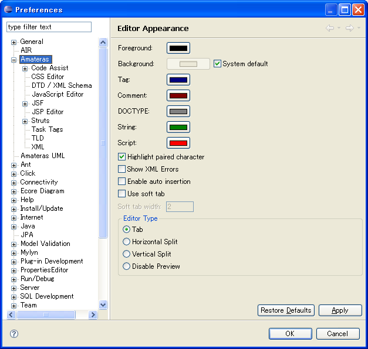
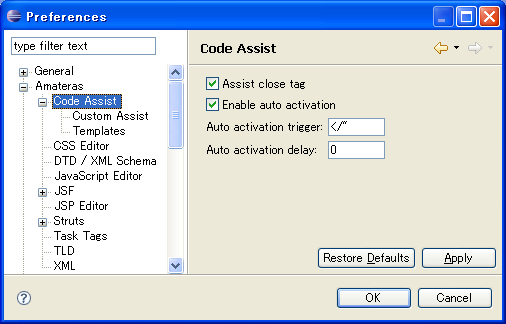
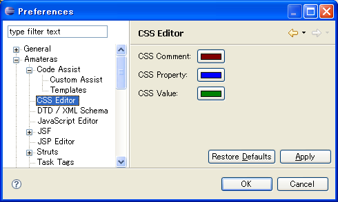
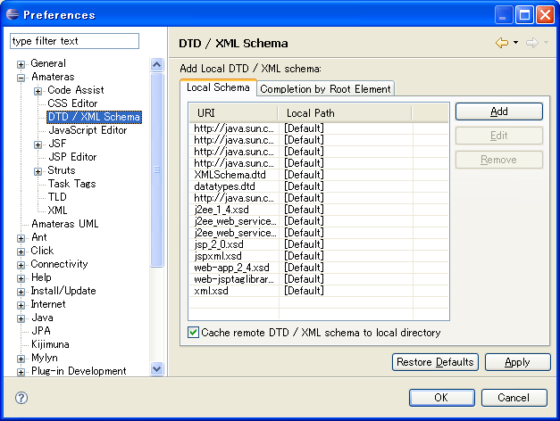
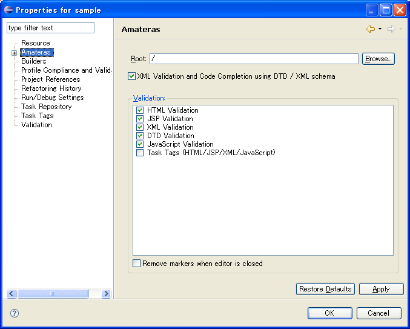
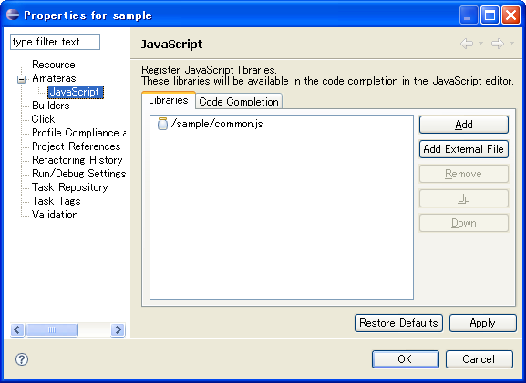
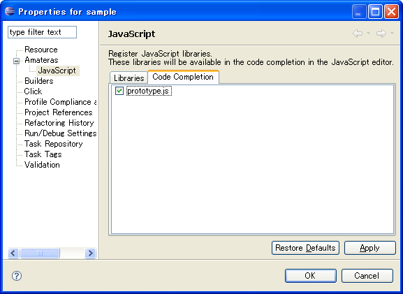

Once installed, EclipseHTMLEditor adds workspace preference pages and project property page to Eclipse workbench.

This figure shows IDE artifacts added to the Preferences dialog. The color preferences on this main preferences page should be self-explanatory. This page has following options:
| Option | Description |
|---|---|
| Highlight paired character | When this option is checked, editors highlights bracket which corresponds to a character on the caret position. |
| Use soft tab | When this option is checked, editors put space of specified number by Soft tab width instead of tab charactor. |
| Show XML Errors | |
| Enable auto insertion | |
| Editor Type | The Editor Type preferences control whether, while editing an HTML or JSP page, the source and preview panes are displayed as tabs, as split panes, or don't display. |

Code Assist preferences allow you to control some aspects of code completion. It has sub preference pages Custom Assist and Template.

CSS Editor preferences allow to you to configure the CSS editor colors.

DTD preferences allow you to manage the DTDs with which you work.
Usually when an XML document with a DTD declaration is opened in the XML Editor, the editor uses the DTD at the URI to provide validation and code-completion. However, if you want to use an alternate, local, DTD for a declaration referring to one at a remote URI, the Add Local DTD section let's you do just that: click the Add button, and enter the URI and the path to the local copy of the DTD you want to use.
Note: in a DTD declaration such as:
<!DOCTYPE faces-config PUBLIC "-//Sun Microsystems, Inc.//DTD JavaServer Faces Config 1.1//EN" "http://java.sun.com/dtd/web-facesconfig_1_1.dtd">
faces-config is the name of the DTD's root element, "-//Sun ..." is its ID, and the "http:// ..." part is its URI.
The checkbox for Cache remote DTD to local directory lets you avoid repeatedly fetching a remote DTD. When checked, DTDs whose URI is not already specified in the Add Local DTD section are cached to a local file the first time they are accessed, then read from that file thereafter.
Note: once a DTD is cached locally, the remote DTD is no longer consulted and the cached copy is not updated even if the remote one changes.

JavaScript property page allow you to configure JavaScript libraries. This page has two tabs below:

In the Libraries tab, you can add *.js files as JavaScript library.

In the Code Completion tab, you can choose JavaScript libraries which used in your project, JavaScript editor shows functions, methods and classes which are provided by these libraries in code completion proposals.
The latest version of EclipseHTMLEditor supports only prototype.js, script.aculo.us and Adobe AIR.